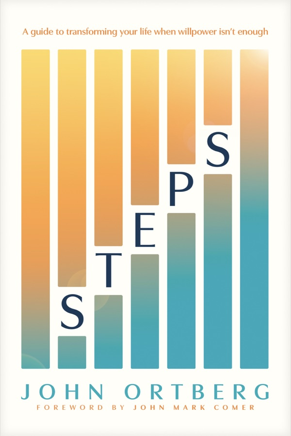

A guide to transforming your life when willpower isn't enough
Ortberg's late, raw book. He reads the Twelve Steps of Alcoholics Anonymous as a Christian way of life for everyone, addicted or not. AA got the steps from the church, and the church needs them back. The whole book comes down to three short lines: I can't. He can. I think I'll let him.

The book opens with a litany of "I can't": fix my family, keep my job, salvage my reputation, stop binge-watching, stop comparing, quit worrying, please my parents, get my child to come home, run the show. Then Ortberg shows he means it.
As a young preacher at a Baptist church, he fainted in the middle of his own sermon ("not a Pentecostal church where you get credit for that sort of thing"). Then he fainted again the next time he preached. His dean, the stress psychologist Arch Hart, told him that trying hard not to faint makes you more likely to faint. He suggested a chair on the platform: "When you're about to faint, sit down. Plus, you don't have so far to fall." So for years Ortberg preached next to an empty chair, a public reminder of weakness. Forty years later he writes that his last church job "ended in a much darker experience of weakness and defeat and humiliation than the first one. And there was no chair big enough to hold me up that time." He has known "deeply painful failure as a parent" and "in my calling as a pastor," brokenness he "cannot solve and cannot fix."
His daughter Laura lost three babies to miscarriage; the fourth pregnancy brought violent nausea and clinical anxiety. At the same time his father, who had put a tennis racquet in Ortberg's crib, was dying of a cavernoma in his brain stem. Ortberg took him to the Galápagos; at dinner nobody could understand his speech and food fell from the paralysed side of his mouth, but he loved it. "We are born powerless, and we die powerless."
Kate Bowler: "Control is a drug, and we are all hooked." This book is about "the importance of hitting bottom, of handing the boulder over to someone else." Another King rolled a stone away, "only when he rolled it, it stayed rolled." You don't have to be desperate to start, "but it helps. If you don't feel much desperation, just keep living. Desperation will be provided."
The steps came out of the Oxford Group, a movement trying to rediscover how to follow Jesus. When Bill W. wrote them, his first thought was that there were twelve, like the disciples. Dallas Willard called it "one of the all-time greatest ironies of human history" that the most successful recovery programme, almost entirely borrowed from the Christian movement, is not routinely taught in churches. Philip Yancey felt at his first AA meeting that he had found a New Testament church. Ortberg didn't think he had any addictions when he started attending twelve-step groups. "Now I think their name is Legion." Ernest Kurtz called his history of AA Not-God, because the addict's basic problem is thinking he's God, which is everyone's problem. "Everybody gets crucified by something."
Twelve-step groups meet downstairs in church basements: metal chairs, weak coffee, stale cookies. "Upstairs people usually seem to have their lives together, while downstairs people are trying not to fall apart." In AA they say that at church you can go upstairs and hear about miracles, or come downstairs and see them.
“Spirituality is not a skill to be mastered but a life to be lived.”Quoted by John Mark Comer in the foreword
We admitted we were powerless over our deepest problems, that our lives had become unmanageable.
Thirty-five years ago Ortberg and a minister named Paul spoke to underground pastors in Ethiopia under the Marxist dictator Mengistu. Those pastors called prison "The University." In the last session Paul preached on the man with the withered hand. He sat in the synagogue and didn't ask to be healed. Jesus told him, "Get up and stand in front of everyone," exposing his shame in front of the able-bodied religious people. Then he said "Stretch out your hand," the very thing he couldn't do. "What God asks us to do is precisely what we are unable to do." The pastors began to confess: fear of arrest, jealousy, inadequacy, bickering churches. Power came, not through giftedness, but in powerlessness. (The Bibles they had smuggled in were confiscated at the airport. The official's bribe was to keep one for himself.)
The Fellowship of the Withered Hand is "a community of people whose pain and brokenness are no longer hidden and who draw unexpected strength from God and others precisely in the free and grace-filled disclosure of their weakness." Stigma was a brand on a slave or criminal. Jesus came to embody each stigmatised category Erving Goffman lists, and his risen body still carries the stigmata. Church people find this step hardest, so Stephen Haynes suggests a Step 0: "We admitted that, despite all appearances, we were not fine." Ortberg's own list: I can't heal those closest to me, fix my heart, control how people think of me, make fear or sadness or shame or envy go away. "I can't keep from waking up at 3:00 a.m., staring at the ceiling."
Start with easy things you're powerless over: weather, traffic, hiccups, death. Then get personal. Russell Brand asks, "Do you have a problem?" Write it in terms of your reactions: "My anxieties… my envy… my drinking… my bitterness," not someone else's behaviour. Stretch out your hand. In this fellowship, "the worse your story, the warmer your welcome."
For people whose lives seem manageable, his advice is not to wait for a crisis. Two friends mourn Mike, dead of drink at 32: "Did he ever try AA?" "Oh, no, he wasn't that bad!" Nobody dreams of "not that bad," but many end up living there, going to the grave "with all their music in them." Nobody's life is manageable, mainly because we can't manage what's inside us. The School of Life's secular wedding includes a "Book of Imperfections" and a congregation that recites "We have all been idiots and will be idiots again." Anne Lamott: "Try not to compare your insides to their outsides."
Benyoni, "Little Bird," was a Tutsi headmaster who sang constantly. During the Rwandan genocide, soldiers came to execute him and eleven teachers. He prayed for the soldiers, asked to sing one last hymn ("Out of my bondage, sorrow, and night, Jesus, I come"), and died. That night the lieutenant found an old Quaker teacher: "I must know what would enable men to die like that." He became a follower of Jesus and told the story until he too was executed. Benyoni could meet that moment because of the life he had lived before it.
Carl Jung told the hopeless alcoholic Rowland H. that only "a vital spiritual experience" could save him. Rowland found God through the Oxford Group, told Ebby, who told Bill W., and AA began. Jung later wrote to Bill W.: the craving for alcohol is "the equivalent on a low level of the spiritual thirst of our being for wholeness," and the formula is spiritus contra spiritum, spirit against spirits. Paul: "Do not get drunk on wine… be filled with the Spirit." (Rowland's family had first wanted Freud, but Freud was too busy. "One answer to the question 'Why did AA get started?' is 'Because Freud was too busy.'")
A psychologist with forty years of practice said his clients' most common regret was selfishness, and that it was never the problem they came in for. Like the prodigal ("Look! I'm in the hog pen!"), ask for insight. Where have managing and controlling failed? Remember Henri Nouwen's trapeze artist Rodleigh: "The flyer does nothing and the catcher does everything." The worst thing a flyer can do is try to catch the catcher. Stretch out your arms and ask God to catch you.
"A black belt is just a white belt that kept showing up." Jesus called the disciples "little-faiths," and they kept showing up. Recovery groups treat admitting your inadequacy as an achievement to celebrate; "Remember, your best thinking got you here." His friends Rick and Sheri Blackmon devised the Scale of Acceptance (Ortberg thinks they invented it during a fight):
In Susan Howatch's Glittering Images, a clergyman trapped by his image falls apart and is healed through that breakdown. Ortberg's parents, wife, friend Rick and sister all gave him the book. "Please, don't anyone else buy me that book." Paul moved up the scale with his thorn, which he was given "to keep me from becoming conceited." He rejected it, prayed three times, then embraced it: "when I am weak, then I am strong." Margaret Mead named a healed 15,000-year-old femur as the first sign of civilisation, because someone cared for the injured person for six weeks. Having good circumstances "is not an adequate foundation for life."
The US Department of Agriculture's advice to a man at war with his dandelions: "Sir, our advice is that you learn to love those dandelions."
We came to believe that a Power greater than ourselves could restore us to sanity.
Lysa TerKeurst notes how often "But I…" defeats us: I should work out, but I'm tired. It runs through the Bible too. Abraham: but I'm too old. Moses: slow of speech. Gideon: the least in my family. Jeremiah: only a child. Peter: we fished all night. God never argues with these. He never says "Moses, you're a pretty good speaker." Paul reminds the Corinthians that not many of them were wise, influential or well born, "But God chose the foolish things of the world." Fleming Rutledge: when you hear "but God" in the New Testament, "tune in." Joseph: "You intended to harm me, but God intended it for good." "God is bigger than your but. (One t.)"
His boss after the fainting episodes told him: "You may stop fainting, but you must not stop preaching." God didn't remove the fear, "but God has now kept me upright while preaching for forty years in a row." At the church's seventy-fifth anniversary he was still remembered as "the fainting pastor," and the marble platform had since been carpeted. Menlo Church shrank from thirteen members to seven. A childless couple there lost their only son and founded a school in his name: Leland Stanford Junior University. Martin Luther King Jr.: "Only when it is dark enough can you see the stars."
Name an area of "but I…" defeat. Viktor Frankl survived the camps partly by vividly imagining teaching again; prisoners who couldn't imagine a future lay down in the mud and died. Picture a future where your actions have meaning: caring for people you love, serving with joy. When a "But I" arises today, don't fight it; let "But God" arise beside it. "It's time to get off your but."
How much faith did Abraham, the model of faith, really have? Not much, says Ortberg, drawing on Eleonore Stump. Being a patriarch was "the Mesopotamian Dream." Abraham kept making backup heirs: nephew Lot (plan B), his servant Eliezer (plan C), Ishmael through Hagar (plan D). He laughed at the idea of a son at 100. Even after Isaac was born, when Isaac went twenty years without children, Abraham married Keturah and had six more sons: "Plans E, F, G, H, I, and J." His faith was "not enough to be certain. Not enough to avoid mistakes. Just enough to interact with God." God was "deliberately, repeatedly ambiguous" with him, because God wanted a friend, not a rule-follower. "Came. Came to. Came to believe." Sanity, in this sense, is above all not mixing up "which one of us is God and which one of us is me."
| Core doubt | Who has it |
|---|---|
| That God has power | Abraham and Sarah laughing; "God can't change my heart." |
| That God is good | Nancy Ortberg pictures a deity waiting round the corner with a baseball bat. |
| That God exists | Ortberg himself: what if atoms and strings are all there is? |
| That God intervenes | His friend Rick: a good Creator, watching from far off. |
| That people change | Vanauken: the strongest argument against Christianity is Christians, especially "when the unchanged person is me." |
| Religion itself | A woman raised between synagogue and rosary called her Higher Power "Ralph," until a drunk man stood up at a meeting and said "My name is Ralph." "That's not my God." |
Don't try to will the doubt away. "You can have doubts and go to heaven; you can be certain and go to hell." Ask God for a "Ralph" moment that brings him into clearer focus.
The Arctic tern flies 1.8 million miles in a lifetime, but the longest journey is the twelve inches from head to heart: from believing God exists to experiencing yourself as his beloved child. Newborns spend their first hour in "quiet alert," searching for a face. When Ortberg mused about their firstborn growing old, Nancy said: "Give me the baby; you're creeping her out." ("I'd kill for this baby.") Our attachment to God takes forms that mirror human attachment styles:
A rabbi explains why Torah says to put the words upon your heart: our hearts are closed, so the words wait on top until "the heart breaks and the words fall in." In one of the darkest weeks of his life Ortberg told his oldest friend Chuck not to come. Chuck said: "Oh no. I'm coming. I'll sit outside on your doorstep the whole time. You don't even have to see me." "I was loved by him in my neediness more than I ever had been in my strength."
Pray the "be-with-me" prayer in the morning. When anxiety or avoidance comes, don't fight it. Brother Lawrence was convinced for ten years that he was damned, until he stopped fighting the thought and gently returned to "a simple attention and a fond regard for God." Katherine Thompson credits his work with bringing the word "mindfulness" into English.
We made a decision to turn our will and our lives over to the care of God as we understood Him.
In Band of Brothers, Lt. Speirs tells the terrified Private Blithe: "The only hope you have is to accept the fact that you're already dead." A child in Sunday school, asked how to get to heaven: "You gotta die first!" Half measures fail. C. S. Lewis says Christ wants all of you, "No half-measures are any good," and the Big Book says the same: "Half measures availed us nothing." A relative whose motto is "I'd rather be dead than cold" lowers herself into a pool an inch a minute, miserable the whole way. Dive in and the water holds you. "When we die to ourselves, we are not being buried, just planted." Dag Hammarskjöld: "at some moment I did answer Yes to Someone."
Surrender has been misused to justify slavery and abuse. But the more we depend on God, the less we depend on money, looks, approval, our children's choices or our circumstances. "You got this!" was posted to a woman entering hospice. "Sometimes you don't got this. Sometimes this got you." And it's "God as we understand him." Ortberg first saw himself in The Truman Show as Truman, stuck in a protective bubble. Later he saw he was also Christof, the director: "I have wanted other people to say the lines I wrote for them so that I can look like a successful father and pastor… I have written the very movie that breaks my heart."
Make two fists and squeeze. Feel it in your forearms, shoulders and neck: that is willfulness (Gerald May). Now open your hands, palms up, on your lap. That is willingness: never exhausting, always available. "Acceptance is the answer to all my problems today." Are you willing to turn your life and choices over to God? "You don't got this. He's got you."
The full Serenity Prayer is his tool and Mary is his model. She was "greatly troubled" at Gabriel's message. An unmarried pregnant girl could be stoned. "Life can only be understood backwards; but it must be lived forwards" (Kierkegaard). She accepted what she could not change: her calling; Simeon's "a sword will pierce your own soul"; being too poor for a lamb at the temple (two doves instead); losing twelve-year-old Jesus ("I lost the Messiah!"); her sons' unbelief; the cross. Conditional surrender is a contradiction in terms. "Unconditional Surrender" Grant didn't negotiate outcomes.
But she was no doormat: she had the courage to change the things she could. Guatemala's government once banned public reading of her Magnificat. Scot McKnight finds five major themes of Jesus' teaching in it: "Mary passes on her own vision and vocation to her son." In surrender "we give up control, but we do not give up agency." Weeks after his father died, Ortberg's 83-year-old mother refused to leave a bank counter for an hour until someone finally helped her. His own needed changes are inside him: arguing that he was only eleven minutes late, not fifteen; resenting Nancy for volunteering his time. "In authentic surrender we give up ego and selfishness but not initiative and courage. In pseudo-surrender it's the other way round."
And she had the wisdom to know the difference. Mary "treasured all these things and pondered them," which is prophets' language, not scrapbooking. She soaked her mind in Scripture (nearly every phrase of the Magnificat comes from it). She learned from her mistakes, asked for wisdom (her son James wrote "if any of you lacks wisdom, ask God") and hurried to her friend Elizabeth.
God, grant me the serenity to accept the things I cannot change, the courage to change the things I can, and the wisdom to know the difference. Living one day at a time, enjoying one moment at a time, accepting hardships as the pathway to peace, taking, as he did, this sinful world as it is, not as I would have it, trusting that he will make all things right if I surrender to his will, that I may be reasonably happy in this life and supremely happy with him forever.
He surrenders everything, then minutes later snaps at a shoe-store clerk over a returns policy, and lies about why he bought the cheap brand. ("A lie is an abomination unto the Lord and a very present help in time of trouble.") Hence Jesus' word "daily." Paul hammers the Corinthians on three linked defects, envy, boasting and being "puffed up," then says in 1 Corinthians 13 that love is the opposite of all three. George Costanza's "Do the Opposite" lasted one episode. Marsha Linehan's DBT teaches "opposite action," and every one of Jesus' teachings is an opposite: to be exalted, humble yourself; to live, die; to be rich, give; to take revenge, forgive; to get credit, keep it secret. When Nancy yelled "Drought!" at his long shower, he sulked, and then did the opposite and confessed it.
Whenever you're agitated, relax your shoulders, open your palms, breathe, and pray "Your will be done": in traffic, about a child, when your computer crashes, after a bad golf shot, when you lie dying. Lewis: each morning your wishes "rush at you like wild animals," and the first job is "shoving them all back." Three frogs sit on a log and one decides to jump. How many are left? Three. Deciding isn't jumping.
We made a searching and fearless moral inventory of ourselves.
It's Marie Kondo, spiritual edition. Six forms of resistance:
Relax your face. Now think about the sensitive areas: money, sex, anger, insecurity, deception. Where your face tightens, you've found resistance. Breathe, relax, keep reading.
Be concrete. Smedes: "You cannot swallow yourself whole." Vague confession is "like taking a shower with your clothes on." There are older frameworks: the seven deadly sins, Luther's Ten Commandments, Ignatius's chronological review. The recovery method Ortberg finds most useful starts with grudges, because we remember the hurts we received far better than the ones we caused. ("Every Taylor Swift album is a series of grudges set to music.") Four columns:
| I'm resentful at | Because | Affects my | My part |
|---|---|---|---|
| My boss | bad review | income | told lies |
| My spouse | criticised my lack of helping out | self-esteem | defensive |
| Sarah | didn't invite me to her party | relationship | gossiped, withdrew |
The fourth column is "plank-removal, not speck-identification." Look for patterns. Ortberg's own: defensiveness, approval addiction, selfishness, deception and image management, withdrawal, envy, comparison, contempt. A grudge list becomes a "redemptive grudge list." Done thoroughly, his ran to dozens of pages ("copies available upon written request"). List your assets too, and give thanks for them.
"I thought, as I grew older, I would also grow less afraid. It has not worked out that way." In a public, painful conflict with former church leaders, facing accusations of malice and dishonesty, his hands were clammy and his thoughts raced. A friend took him for a walk and taught him the Fear Inventory. Fear sheds like his yellow lab Baxter. Writing to Dallas Willard, he signed off "John C. Ortberg Jr., PhD"; Willard replied without the three letters.
In plain words, written down. "You can't tame what you can't name." Suppressing a thought makes it come back. In quicksand you get out by spreading out, not by stepping.
If you fear the IRS, pay your taxes. "Do not fear" is the Bible's most common command, and it nearly always means do the thing you're afraid of. Eugene Peterson's A Long Obedience was rejected 22 times.
A breath prayer each time the fear returns: "Even though I walk through the valley… you are with me." When a young cellist played a wrong note, Ben Zander told him to throw up his arms: "How fascinating!"
Carol Dweck's two mindsets get a twist. If we believe our talent is fixed and our worth is variable, we live in fear; if our worth is fixed and our talent variable, we live in growth. "According to Jesus, what is fixed about us is not our talent but our worth." William James tells of a man who hung from a branch all night over a cliff, let go at last, and found the ground six inches below.
We admitted to God, to ourselves, and to another human being the exact nature of our wrongs.
Every weekday at 6:50 a.m. Ortberg and his friend Rick call each other. Where were you tempted yesterday? What do you face today? Then they pray. Rick has access to all his accounts and knows his work, his ego and his sexual life. (His father's only sex talk, from his mother: "Son, there are bad girls at college." He wondered how he'd find them.) "There is no significant guilt, humiliation, failure, embarrassment, sin, or shame in my life that Rick does not know." Two out of three (God, myself, another person) "doesn't sound bad."
Christie Tate's therapist told her: "You don't need a cure. You need a witness." Church groups are often the mirror image, with no disclosure but lots of answers. A counsellor named Bruno asks clients who are going through the motions: are you here to save your face or your a–? "Turns out you can't do both." The Reformers taught the priesthood of all believers; we practise "the priesthood of no believers." James: "confess your sins to each other." "We are as sick as our secrets." When the "sinful woman" anointed Jesus' feet, he simply sat there. He was her witness. Then he honoured her: "Your faith has saved you. Go in peace."
The first time he read his written inventory aloud to Rick, he barely looked up. Rick said: "John, I have never loved you more than I love you right now." "When I expected less love, I received more love."
"We can only be loved to the extent that we're known." Look for four things. Deep acceptance: never bleed in front of a shark; test with small disclosures first. Courageous truth-telling: not "idiot compassion"; Tournier says a friend should be "ambitious" for you to be brave. Confidentiality, with vulnerability running both ways. Mutual joy: friends want to be together, "He will be delighted to see you" (God about Aaron). Aelred of Rievaulx calls a friend "another self… to whom you can entrust all the secrets of your heart." He advised a probationary period, and wrote that removing friendship from life is like removing the sun.
Parker Palmer froze on a 110-foot rappel at a dark hole in the cliff face: "I don't want to talk about it." His guide shouted the Outward Bound motto: "If you can't get out of it, get into it!" Most people never find a disclosing friend because no one asked; most volunteers volunteer because someone did. Not your spouse (privacy yes, secrecy no). Be wary of anyone who offers to hear your confession uninvited. Ortberg has done three "major overhauls" with Rick: pray, read the pages, start with what you least want to say (therapists know the "doorknob disclosure"), and end with words of love. Decades later Rick explained why he had said he never loved him more: Ortberg's achiever side kept people at a distance, and his weakness bridged it. "You can be impressive. You can be connected. You can't be both."
Day to day it's "tune-ups": accountability, which works like a patrol car pulling onto the freeway. In Anna Lembke's account of the "Ulysses pact," you tie yourself to the mast before the Sirens sing. The little-known ending: the Sirens die only when someone hears them, survives, and tells the story. "The slaying was in the telling."
Do I decide what to do without relying on God? Do I depend on God for help and guidance? Then name your commitments in finances, truth-telling, time, sexuality, anger, parenting and work to a trusted friend, "God with skin on," and agree to report back.
We were entirely ready to have God remove all these defects of character.
"Except for that part of me that's afraid that if I didn't have any character defects, I might not have any character at all." Like Westley in The Princess Bride, our defects are "only mostly dead." Augustine prayed, "Lord, make me chaste, but not yet," and so do we: God, make me generous, grateful, patient or humble, but not yet. A father, grudgingly letting his child stay up for Bambi, explains the mother's death: "Bambi did not go to bed on time." Harry Frankfurt calls flourishing "internal integration of the will." The excuses get creative: one driver said he was pulling out ear hair for a date, and another claimed she was texting while breast-pumping. "If the heart is an idol factory, the mind is an excuse search engine."
Phil Connors in Groundhog Day exhausts pleasure, seduction and even suicide, then gets "sick and tired of being sick and tired" and starts changing from the inside. Sometimes the instruction is "Don't just do something. Sit there." Ortberg hasn't slept through the night for years. Instead of nursing and rehearsing grudges at 3 a.m., he is learning to sit there and look at the troubled heart within.
Let your go-to excuses surface. Notice where you feel most defensive and how you justify not changing. Let the discomfort come: "The truth will set you free, but first it will make you miserable."
Robert McKee distinguishes characterisation (age, looks, job) from character, which is revealed in choices under pressure, and character is built from habits. William James called the mechanism plasticity: a fold in paper, a gully worn by rain. Hebb's rule says "neurons that fire together, wire together." Twenty-one days to form a habit is a myth. "Habits eat willpower for breakfast." Sin has got into our habits, our "members": lust into the eyes, deceit into the tongue, contempt into the face. James: "Hell is mostly not a matter of relocation but of malformation," and every small stroke of vice "leaves its never so little scar." Habits are best replaced, not extinguished (Duhigg). People high in self-control spend less energy resisting temptation, because they have good habits. The aim is generosity so habitual that the left hand doesn't know what the right is doing.
Attach a new habit to an existing one. Five minutes of spiritual reading when work ends; three gratitudes after dressing; a couple married 65 years saying "I love you" at bedtime; a timer every two hours to pause and pray. Add one that brings joy. One of his children discovered "it is very difficult to skip and feel depressed at the same time."
| Source | Have | Others' opinion | Do |
|---|---|---|---|
| Henri Nouwen's three lies | "I am what I have" | "I am what other people think of me" | "I am what I do" |
| Thomas Keating's programmes | Security & survival | Affection & esteem | Power & control |
| 1 John 2:16 | Lust of the flesh | Lust of the eyes | Pride of life |
| Genesis 3 | Good for food | Pleasing to the eye | Desirable for wisdom |
| Jesus' temptations | Stones to bread | Jump from the temple | All the kingdoms |
Ortberg confesses all three. He felt a twinge of envy when a friend's retirement account was bigger than his. When his book sales fell he threw the figures away unread and told no one. In college he sulked and withdrew when a friend named his need to be right. Arthur Brooks heard a Wall Street star say, "Maybe I would prefer to be special rather than happy." "I am a special-aholic." Jesus was blessed at the river ("You are my Son, whom I love") before he was tested in the desert. "Our identity is received; it cannot be achieved."
Following Trevor Hudson, write God's promise to you in Scripture's words and read it each morning. Ortberg's ends: "There is now no condemnation… nothing can separate you from my love. Not scandal, not failure, not losing your job, not having people write bad things… I no longer call you servant, but friend. Now go get 'em." ("'Go get 'em' is not actually in the Bible.") First release the three: power and control, affection and esteem, security and survival.
We humbly asked Him to remove our shortcomings.
In Amor Towles's A Gentleman in Moscow, people who have fallen from grace form "the Confederacy of the Humbled"; maybe they didn't fall from grace but into it. "God opposes the proud but gives grace to the humble" is not a command but an observation, like gravity. Spiritual practice breeds "spiritual narcissism" (so many yoga poses on Instagram). In 1950, 12 percent of high-school seniors called themselves "a very important person"; by 2005 it was 80 percent. Keating: "Humiliation is the way to humility." The question in Scripture isn't who's in or out, but "What kind of person can God work with?" In the Galápagos the guides were proudest not of the tortoises or boobies but of the ladybug beetles that saved the ecosystem. Friends engraved jewellery: "Be the beetle."
Not "I've read that book" when you haven't. "Don't make your Facebook self any prettier than your therapy self."
No entitlement, no head table, no mansplaining. Give up a good parking space. Don't assume bad motives.
Take a day off from building your brand. Let someone else talk first. Get the coffee.
Willard's "fail-safe recipe for humility": refrain from these three for a month. "Money-back guarantee if it doesn't work!" Pick the P that irritates you most in others; that's probably yours.
Jesus healed bodies instantly but character slowly, and almost nobody asked him for character change. ("Tell my brother to divide the inheritance.") Emotions are good servants and bad masters. Rick's acronym:
Notice the never-silent voice in your head (Michael Singer). Befriend the ugly pug that won't leave your doorstep; fed and petted, it settles. Don't judge the impulse, but do judge the action.
What we resist persists, like a beach ball held underwater. One of Rick's clients named her anxiety "Wilma" and greeted it: "Welcome, Wilma." We want God to change our circumstances; God wants our circumstances to change us.
"If we can name it, we can tame it." In a UCLA study, spider-phobic people who named their fear got closer to a tarantula a week later. "I do believe; help me overcome my unbelief!"
Spend five or ten minutes noticing your body's movements, tensions and the chatter in your head. Thoreau: the man proudest of his heavy mail "has not heard from himself this long while." Then bring it all to God and ask him to remove the defects, in his time and his way.
Told to run from baby skunks, the children each picked one up and ran. In the recovery parable, Mary swims for the boat Healing bound for the island Freedom, sinking under a rock tied to her neck. The others yell, "Drop the rock!" Once she's free and aboard, she's the first to shout it to the next swimmer. The rock is resentment and stubbornness, and finally our whole self-centred, "without-God" life. The original story is the woman caught in adultery. "Let any one of you who is without sin be the first to throw a stone," and the oldest left first. Then: "Neither do I condemn you. Go now and leave your life of sin."
Screwtape encourages the sense of ownership, "my time is my own." While Ortberg was writing this chapter his daughter called from a bookstore: come meet the owner. His first thought was that he had no time, because he was writing about how our time isn't our own. He went. The owner's father had called him stupid; he finished school with a 1.88 GPA and discovered reading in the jungles of Vietnam. "I am the luckiest man in the world." It was the third anniversary of Ortberg's father's death. "It was a holy moment. But it wasn't 'mine.'"
Notice "my" and "mine" today. Treat interruptions as gifts. Pray Ignatius's Suscipe: "Take, O Lord, and receive my entire liberty… Give me only Thy love and Thy grace." In The Last Crusade, Indiana's father says "Indiana, let it go," and he lets go of the Grail and is saved.
We made a list of all persons we had harmed and became willing to make amends to them all.
We live in "the age of rage." A viral relaxation script ends with the head you're holding underwater. Step 8 isn't about difficult people, except ourselves; it's about "cleaning up our side of the street." There are two lists. The easy one is of people who hurt us, like Victor McLaglen in The Quiet Man telling his lackey to "put them down in the book." Love "keeps no record of wrongs." Rebecca DeYoung: anger is the wrongful pursuit of the rightful value of justice. "Victimhood is a kind of power," and Ortberg warns against Christians competing for victim status. Buechner: anger is "a feast fit for a king. The skeleton at the feast is you."
Zacchaeus, read with Kenneth Bailey and Amos Yong, may have been a little person, stigmatised and excluded. "Everybody's actions make sense to them." He and the town each saw themselves as the other's victim. When Jesus chose his house and the crowd grumbled, Zacchaeus had a moment of clarity. He saw the widow and the orphans he had hurt, stood up and pledged half his goods plus fourfold repayment. "We cannot be in a relationship of love with Jesus and continue to harm the people around him."
| Barrier | Answer |
|---|---|
| "They don't deserve it." | "Deserve's got nothin' to do with it" (Unforgiven). Clean your own house. A grandfather's estrangement melted when his grandchild ran out to hug him. |
| "It would be too humiliating." | After one last binge, Dr. Bob went round to everyone he had harmed. It was his last drink; he helped some 5,000 alcoholics. |
| "God will forgive me without it." | Being forgiven isn't getting out of trouble. If we won't make amends, we just want to avoid pain. |
| "I can't afford it." | Zacchaeus operated from God's abundance. A man released from prison for fraud repaid his victims anyway. |
| "I don't want to." | Willingness isn't wanting. Welcome it like grumpy Aunt Eva at Thanksgiving. |
| "I can't think of anyone." | "If we think we have harmed no one, we are purposefully forgetting." (Medieval penance manuals asked: "Have you committed murder?") |
For each person: their name, your hurtful action, the character flaw behind it, and "Am I willing to make amends?" (yes / no / maybe). Everyone, even if you don't know where they are. One line per incident. "What if they don't deserve to be forgiven?" "What if God asked that question about you?"
"The only thing harder than forgiveness is the alternative" (Yancey). Everett Worthington, the leading forgiveness researcher, finished his manuscript and a week later his mother was murdered with a crowbar. He distinguishes decisional forgiveness from deeper emotional forgiveness, which comes in five tasks, illustrated by Joseph and his brothers:
Name the hurt like a historian, not a venter ("Freud was wrong"). Joseph's own favouritism and grandiose dreams were part of the story.
"Dr. Evil and Evil Medical School are fictional." Imagine their side. "Father, forgive them, for they do not know what they are doing."
Forgiveness given as a gift, out of humility, lasts longest. Valjean's candlesticks: "for-give-ing," not "for-get-ting."
Joseph wept so loudly all Egypt heard. Write a certificate, burn the page, nail it to a cross.
Seventeen years later his brothers asked again. Genesis ends there, with the brothers' wound healed.
Write without filter for twenty minutes, four days in a row, about the hurt and your feelings. Stop at the time limit. On day four look for the good alongside the pain, and set it within God's story, with the cross at the centre. If they never repent: "even so forgive him from the heart, and leave to God the avenging."
We made direct amends to such people wherever possible, except when to do so would injure them or others.
To amend is to mend. Perhaps the prodigal did Step 8 at the pig trough and Step 9 on the front porch. ("When I think about doing this, my palms get sweaty." "Well, why don't you lick your palms?") Sort people into four groups. Now: he lied to Nancy about cancelling the old electricity account, snapped at a call-centre worker, and apologised to both. Later. Maybe/maybe not: in high school he said something cruel about gay people; years later he named it to a gay friend who had known. "When we hurt people, they generally remember." Never: the dead, dangerous people ("Get out. Get safe. Stay away."), and cases where confessing would damage a third person.
A starter script: "I have been reflecting… I realized that I wronged you, and I would like to try to make amends." In one season he had dozens of these talks. He named the harm with no explanations, asked what he'd missed (people said his spin cost their trust), stated the amends, and asked what else would help. Amends take the form of resolution, restitution or restoration, or they can be indirect (Zacchaeus's gift to the poor) or living. Nancy's oldest friend lost his son to a heroin overdose on his first day out of rehab; now he speaks to any group that will listen. Bottlenose dolphins regrow a football-sized chunk of flesh within a month.
Unflood first. The amygdala routes anger to the "lizard brain" for 15–20 minutes. Self-soothe and get back "in your right mind."
See the harm through their eyes. "We are blind to our blindness" (Kahneman). Doubt every self-serving memory. Replace furiosity with curiosity.
No "mistakes were made" (Kissinger, JPMorgan, McDonald's fries), no "if-pologies," no "you-a-culpa." A doctor who missed a cancer went to the patient's door against legal advice to confess.
"Forgive us… as we forgive." Polish Christians after the war: "I could no longer call myself a Christian, if I refuse to forgive."
Learn to do things differently. Use a "soft start-up": conflicts end on the note they begin.
In Rwanda, a Hutu man macheted his neighbour's arm, and another man killed her baby in front of her. She survived and sat on his tribunal. Over the years, seeing his remorse, she forgave him and helped him find a wife. Now they tell visitors their story together, and he ends on his knees, asking all who listen for forgiveness.
Outer repairs aren't inner repair. Dallas Willard's aunt made him and his cousin sing "Love Lifted Me" in the time-out corner after fights. We live in "the triumph of the therapeutic." Monty Python's God says "Oh, don't grovel!" But "a broken and contrite heart you, God, will not despise." After Robert Roberts, contrition is not embarrassment (Steve Martin's superfluous buns), not regret over how things turned out, and not guilt that ends in despair. It holds a steady vision of my heart and God's goodness, and hope is what distinguishes it. Imagine the prodigal swaggering home like Ron Burgundy: "I'm kind of a big deal." Raskolnikov found excuses for years, until in Siberia "something seemed to seize him and fling him at her feet." Mary Johnson now lives next door to Oshea Israel, who killed her son. She has become a mother to him.
When you've done wrong, pause before reaching for an excuse. Don't resist, don't defend, don't collapse. Ask for new eyes (their perspective) and a new heart (their pain). "Love lifted me."
We continued to take personal inventory and when we were wrong promptly admitted it.
The average American eats a ton of food a year, about 75 tons in a lifetime: overwhelming in a warehouse, easy a day at a time. Pascal: "We never actually live, but hope to live." In the life of the spirit we are never cured; we have "a daily reprieve contingent on the maintenance of our spiritual condition." A boy tied his shoes for the first time and cried: "now I'll have to do it every day of my life." The aim is early detection. When Nancy reminded him it was "Critical Peanut-Buttering Time" for the toast, he defended himself at length. When he pointed out she'd left the knife in the jar, she just said, "You're right. I'm sorry." "Amazing! Why didn't I think to say that?"
Eugen Rosenstock-Huessy pictures us at the intersection of past and future, inner and outer world: the shape of a cross. "The present becomes his present to us." Through the day, do spot checks as needed. A borrowed car beeped whenever he drifted into another lane; early pilots heard beeps when off course and silence when on it. Upset emotions are the beep. The danger isn't failing but how we respond. Some dieters who eat one cookie recommit; others fall prey to the "What the Hell Effect" and finish the jar. Paul's teleios: part of being mature is knowing you aren't perfect. Evelyn Waugh: "If you think I'm bad with God, imagine me without him."
What am I thinking and feeling? Am I drawn closer to God, further away, or in neutral? Anything to correct or follow up from today? Then meet God at the centre of the cross, right here, and go on.
We sought through prayer and meditation to improve our conscious contact with God as we understood Him, praying only for knowledge of His will for us and the power to carry that out.
"Improve," not perfect. Thinking of God one more time a day is a hundred percent improvement. The earlier steps play defence; this one plays offence, "whatever is true, whatever is noble… think about such things." Willard: the mind is where we make contact with reality. A four-year-old in the time-out chair, smiling: "I'm thinking in cartoons." The mind processes about 120 bits a second, some 24 quadrillion in a lifetime. "How many of them will involve God?" His friend Mark's dog Lady hates him ("her real name is Beelzebub"), but with Mark in the room he's calm: "even when I dwell in the Valley of the Shadow of Lady, I will fear no evil, for Mark is with me." Generic mindfulness is "being present in the present." Christian mindfulness is "being present to the Presence in the present" (Roger Bretherton).
Sit five minutes, no phone, eyes closed, and just notice your thoughts without judging them: how many, how repetitive, how unhelpful. Later, notice every movement of your body for five minutes. Keating: "The main discipline is to sit down and shut up."
Pete Seeger's two maggots: one fell in a crack and starved, the other fell in a dead cat and grew fat. "To what do you attribute your success?" "Brains and personality, brother." We're meant to run on God. "Approach God's throne of grace with confidence": think first of the one on the throne, who is able, here and good. It's a throne of grace, for misfits and mess-ups. Ortberg's old prayer journal was a list of failures, and he sensed God say: "your prayers are depressing me… You're doing it wrong." Prayer needs sursum corda, a lifting of the heart. Its core request is for knowledge of his will and the power to carry it out. "Give us this day our daily bread." Listen too: God spoke to a liar, a fugitive, an adulterer, a runaway and a donkey.
"Most people hate to meditate." A Japanese monk asked how Americans got people to meditate "without beating them." If you can worry, you can meditate; worry is toxic meditation. Ruminate like a cow: quiet your spirit, take one phrase ("the Lord is my shepherd"), reflect on it, notice your response, speak to God, listen, give thanks.
Meditate on Psalm 46:10, dropping a word each line: Be still, and know that I am God. · Be still, and know that I am. · Be still, and know. · Be still. · Be.
Willard's whole answer for growing spiritually: "Do the next right thing you know you ought to do… because you will need help, and you will get it, because that's where God is." After his miracles Jesus gave small next steps. "Take up your mat." To Jairus, after raising his daughter: give her something to eat, "Fix her a sandwich." Admiral McRaven: make your bed. Meister Eckhart: "God is like a person who clears His throat while He is hiding and so gives Himself away." Polkinghorne: the kettle boils because of molecules, and because I want a cup of tea. In Shenandoah, Charlie Anderson prays "we thank you just the same," until his lost son limps into church. As his father's hearse turned the corner, a monarch butterfly, his father's favourite, flew past. "Law of Large Numbers. And yet…"
Write a note. Notice someone overlooked. Unclench your fists. Forgive somebody. Look at the sky and say thank you. Drive slower. Tell someone you believe in God, even if it's scary. Tell the mirror, "You are fearfully and wonderfully made, you good-looking thing." If you forget: "My grace is sufficient." Easy does it.
Having had a spiritual awakening, we tried to carry this message to others, and to practice these principles in all our affairs.
Bill W. had been sober for months, alone and lonely in the Mayflower Hotel lobby in Akron on the eve of Mother's Day, when he heard the bar and decided to get drunk. Then a thought came: not "I need a drink" but "I need another alcoholic." On his tenth call from the church directory he reached Dr. Bob. For all his Bible reading, Bob realised "the spiritual approach was as useless as any other if you soaked it up like a sponge and kept it to yourself." AA dates its founding to Dr. Bob's last drink on 10 June 1935, not Bill's. "You cannot keep what you do not give."
Aquinas: goods that shrink when shared, like money, are small goods. Joy grows when it's shared. Christian Smith's The Paradox of Generosity finds generous people healthier, happier and longer-lived: "a sociological fact." "Miser and misery are only one letter apart." But beware "pathological altruism," giving from strength to show how smart you are. A depressed tax auditor kept a spreadsheet of his wife's mistakes, a "flaudit." Paul did a "graudit": "I always thank my God for you."
"There is no barrier to my joyfully serving God today." Name one mess that shaped you. Decide not to make hiding it your life goal, and prepare to tell it to someone going through the same. Peter's denial and Paul's persecution were "splashed all over the New Testament."
Groups end holding hands: "Keep coming back. It works—if you work it." The greatest threat isn't failure but boredom (James Clear's elite coach). "We generally sin alone, but we heal together." When friends prayed holding hands, Nancy noted that Christians must squeeze at the end or the prayer doesn't count, and an introvert insisted the squeeze be "brotherly/sisterly." The "narrow way" is simply the way that works, like piano practice; the broad way is "doing anything else." Jonah Hill's therapist Phil Stutz names reality's three unavoidables: pain, uncertainty, constant work. Lewis's Law of Undulation: troughs and peaks, and God "relies on the troughs even more than on the peaks." Lincoln's melancholy taught him humility (surrender to God) and determination (never surrender to despair).
Ortberg writes in a room beside a friend's vineyard. Pruned in autumn, the vines look dead; in spring the sap rises and the first drop seeps from the cut. It's called a teardrop, "the weeping of the vine." Downstairs, someone reads the Promises from the Big Book:
A man at a meeting: "If I am not yet amazed, perhaps it is because I'm not yet halfway through." "May we get halfway through."
When your feet hit the floor: "This is the day that the Lord has made; I will rejoice and be glad in it." Then smile. In grief, add: "…somehow."
Old-timers in AA said a person who died sober had "taken the thirteenth step." For people who had faced a soul-shattering affliction, dying sober was a triumph. When his father died, the family was reading Psalm 121; at its last line, "The LORD will watch over your coming and going both now and forevermore," he breathed out and didn't breathe in. Ortberg recites that psalm almost every morning. The earliest Christian building projects in Rome were catacombs, and their most common image was Jonah, who hit bottom and came back on the third day. Take two people, one sober thirty years and the other thirty days: the soberer is whoever wakes up first this morning. "The Fellowship of the Withered Hand turns out to be the Communion of the Saints."
“Another word for thirteenth step is resurrection. I can't. He can. I think I'll let him.”The book's last lines
Read with Ortberg's earlier book, The Life You've Always Wanted (1997). That book says to train rather than try. Steps starts where training runs out: "I can't."